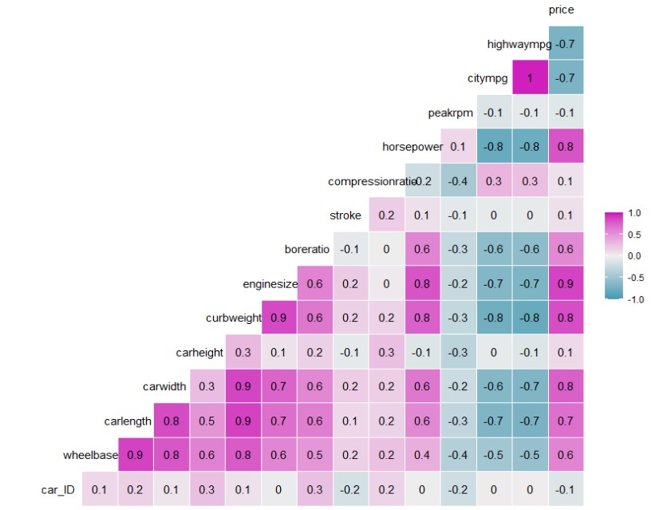
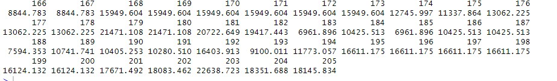

Building a Regression Model
In the given dataset, we have a total of 205 observations. The first 165 observations of the dataset will be used for the training set. Training sets are normally used to
train machine learning models from the data given. To judge the predictive performance
of the selected model, we will hold the last 40 observations from the data set as the test set. The test set
will be used to estimate the prediction error of the model.
Strong Correlation with Price
The heat map illustrates both negative and positive correlation between the independent variables with price, the dependent variable.

From this map, we can observe that the top variables with strong correlations are the following:
highwaympg, citympg, horsepower, boreratio, enginesize, curbweight, carwidth, carlength, and wheelbase.
Variable Selection
First, we want to identify if multicollinearity exists among the car variables.
Multicollinearity is a statistical concept where several independent variables in a model
are correlated. This becomes an issue because it leads to an unreliable regression model.
Variance Inflation Factor (VIF) in R was used to address this multicollinearity issue and is used
to identify the variance of a regression coefficient inflated. Due to this, we are left with the following variables: highwaympg, boreratio, enginesize, carwidth and wheelbase.
Second method used was LASSO Regression Analysis. This regression was used to determine the variables with the most significance
from the list of variables with strong correlation with price. LASSO (short for Least Absolute Skrinkage and Selection Operator) shrinks insignificant regression coefficients
down to zero, leaving non-zero values to be selected for the final data model.
The final model selects the following variables:
•
Highway MPG: the average a car will get while driving on an open stretch of road without stopping or starting, typically at a higher speed. In general, cars with a higher Highway MPG tend to be priced lower meaning they're more fuel-efficient.
•
Engine Size: the volume of fuel and air that can be pushed through a car's cylinders and measured in cubic centimeters. Because of this, the larger the engine size, the higher priced the car is.
•
Car Make and Model: branding also makes a difference in pricing. Luxury and sports cars tend to be marketed as more sophisticated, therefore higher priced.
Due to the summary of the final model, the adjusted R-Squared is 0.82. This means that the model is
82% of variance, indicated the model is a good fit.
Model Validation
The test set was then used to predict the Y-values:

The Mean-Squared Error (MSE) was calculated and falls at 22%. This demonstrates the amount of error in the final model.
Recommendations
Geely Auto should take the selected variables as top priority when considering what kind of vehicles to have on the lot. It would be beneficial for the dealership to have a bit of range in regards to the type of car being offered.
However, it may be best to have majority of cars on the affordable side of the price range in order to accomodate to the cars on demand for the general public. Geely should also keep in mind that the median price of cars are $10,295 and a popular car in the US are the Toyota model.